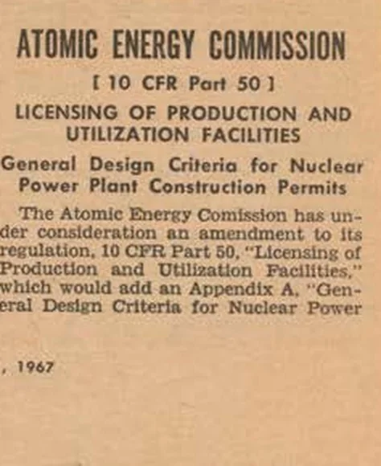
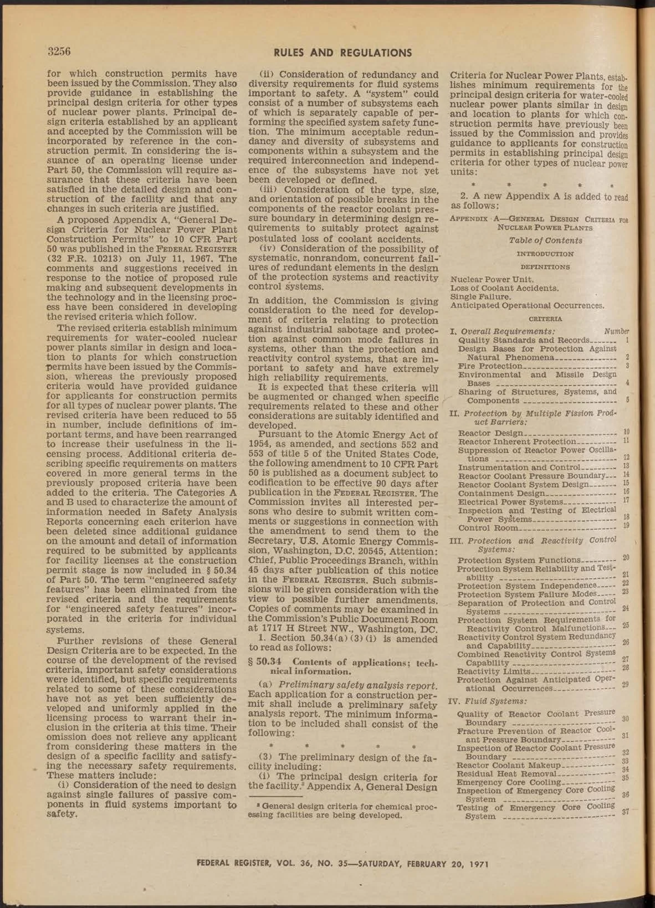
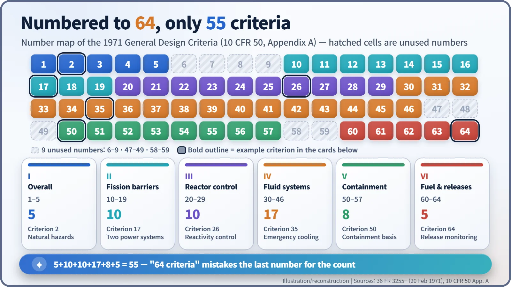
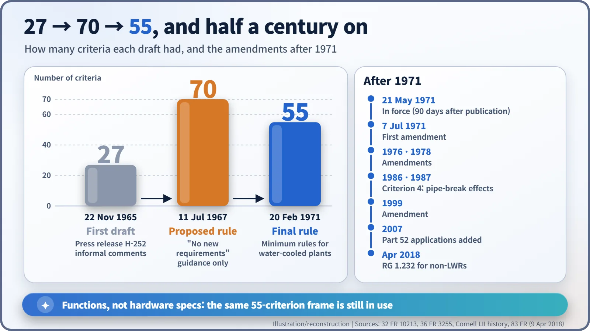

Nuclear History · 240
Numbered to 64, Only 55 Inside — The General Design Criteria for Nuclear Plants (1971)
From a 27-item draft in 1965 to 70 proposals in 1967 and 55 binding minimum requirements in 1971, a short rulebook set the goals every water-cooled plant had to meet.
On 20 February 1971 the US Atomic Energy Commission published the General Design Criteria for Nuclear Power Plants, the minimum design requirements every new water-cooled plant had to meet. The criteria are numbered up to 64, yet there are only 55 of them. Short, goal-based and openly unfinished, they remain the frame of US reactor design rules more than fifty years later.
A quiet debut next to a hog cholera notice
The Federal Register for Saturday, 20 February 1971 (Volume 36, Number 35) is not a page-turner. On page 3255, a Department of Agriculture notice quarantines part of a Texas county because of hog cholera. In the very next column sits a short heading from the US Atomic Energy Commission (AEC): "General Design Criteria for Nuclear Power Plants". The document later nicknamed the "constitution" of reactor design arrived with no fanfare at all. [1]
Read its table of contents and something odd jumps out. The numbering runs 1, 2, 3, 4, 5 … and then leaps to 10.
Every plant argued from scratch
In the mid-1960s American utilities were ordering nuclear plants at a brisk pace. Yet the licensing review was essentially case by case: AEC regulatory staff and the Advisory Committee on Reactor Safeguards (ACRS) worked through each application on its own merits. There was no written, shared yardstick for "safe enough".
A seven-member Regulatory Review Panel appointed by the Commission recommended developing design criteria for use at the construction-permit stage. Staff were already drafting them. After discussion with the ACRS, a preliminary set was circulated informally for comment in AEC Press Release H-252 on 22 November 1965. That draft is reported to have contained 27 criteria. [2]
Seventy, then fifty-five
On 11 July 1967 a revised proposal appeared in the Federal Register (32 FR 10213). It had grown to 70 criteria. On emergency core cooling, for example, it asked for "at least two" systems, "preferably of different design principles". But the AEC was careful to say what the document was not: "These General Design Criteria would not add any new requirements, but are intended to describe more clearly present Commission requirements." [2]

After more than three and a half years of comments and revision, the Commission approved the final text on 10 February 1971. In the words of the preamble, "the revised criteria have been reduced to 55 in number, include definitions of important terms, and have been rearranged to increase their usefulness in the licensing process." Their status changed too. They now "establish the minimum requirements for the principal design criteria for water-cooled nuclear power plants" similar in design and location to plants already licensed, while serving only as guidance for other reactor types. The rule took effect 90 days after publication, on 21 May 1971. [1]

The case of the missing numbers
So, back to the puzzle. The 55 criteria fall into six groups, and each group was given generous room in the numbering:
- I. Overall requirements: 1–5
- II. Protection by multiple fission product barriers: 10–19
- III. Protection and reactivity control systems: 20–29
- IV. Fluid systems: 30–46
- V. Reactor containment: 50–57
- VI. Fuel and radioactivity control: 60–64
Numbers 6–9, 47–49 and 58–59 were left empty from the start. That is why the last criterion is number 64 but there are only 55 of them. The frequently repeated phrase "64 criteria" appears to confuse the last number with the count. [3]

Not "how", but "what must be assured"
The criteria are strikingly short. Criterion 35 opens: "A system to provide abundant emergency core cooling shall be provided." It says nothing about how many pumps or how wide the pipes should be. Instead it sets the goal: after a loss-of-coolant accident, the system must remove heat fast enough to prevent fuel and cladding damage that would stop effective cooling, and must keep the reaction between hot cladding metal and water to negligible amounts. And it must do so with only on-site or only off-site power available, assuming a single failure on top.
That last phrase is the single failure criterion. The 1971 rule defined a single failure as "an occurrence which results in the loss of capability of a component to perform its intended safety functions". Losing any one active component, or any one passive component, must not take the safety function away. It is the same thinking that lets a twin-engine airliner keep flying on one engine.
Other examples: Criterion 2 requires designs to withstand "earthquakes, tornadoes, hurricanes, floods, tsunami, and seiches" (seiches are sloshing waves in lakes and bays). Criterion 17 calls for on-site and off-site electrical systems that can each do the job without the other. Criterion 50 covers the containment design basis, and Criterion 64 the monitoring of radioactive releases.
Because the criteria fixed goals rather than hardware, they could outlive changes in technology. The price was a running argument over interpretation: how much cooling is "abundant"? [1] [3]
A rule that admitted it was unfinished
The most striking passage in the 1971 preamble is its candour. "Further revisions of these General Design Criteria are to be expected," it said, and it listed questions not yet settled: single failures of passive components, the minimum acceptable redundancy and diversity, what type, size and orientation of pipe breaks to assume, and systematic, simultaneous failures of redundant protection elements. Protection against industrial sabotage and against common-mode failures in other systems was also under consideration. [1]
The fight over putting numbers on "abundant" cooling began that same year. The criteria themselves were amended in July 1971 and again in 1976, 1978, 1986, 1987, 1999 and 2007. Criterion 4, "Environmental and missile design bases" in 1971, is today "Environmental and dynamic effects design bases" and deals with the effects of pipe ruptures. [3]

In April 2018 the Nuclear Regulatory Commission (NRC), which took over the AEC's regulatory role, issued Regulatory Guide 1.232. It shows how to adapt criteria written with light-water reactors in mind to non-light-water designs such as sodium-cooled fast reactors and modular high-temperature gas-cooled reactors. Like the empty numbers in its table of contents, the 1971 rule was written with room left to grow. [4]